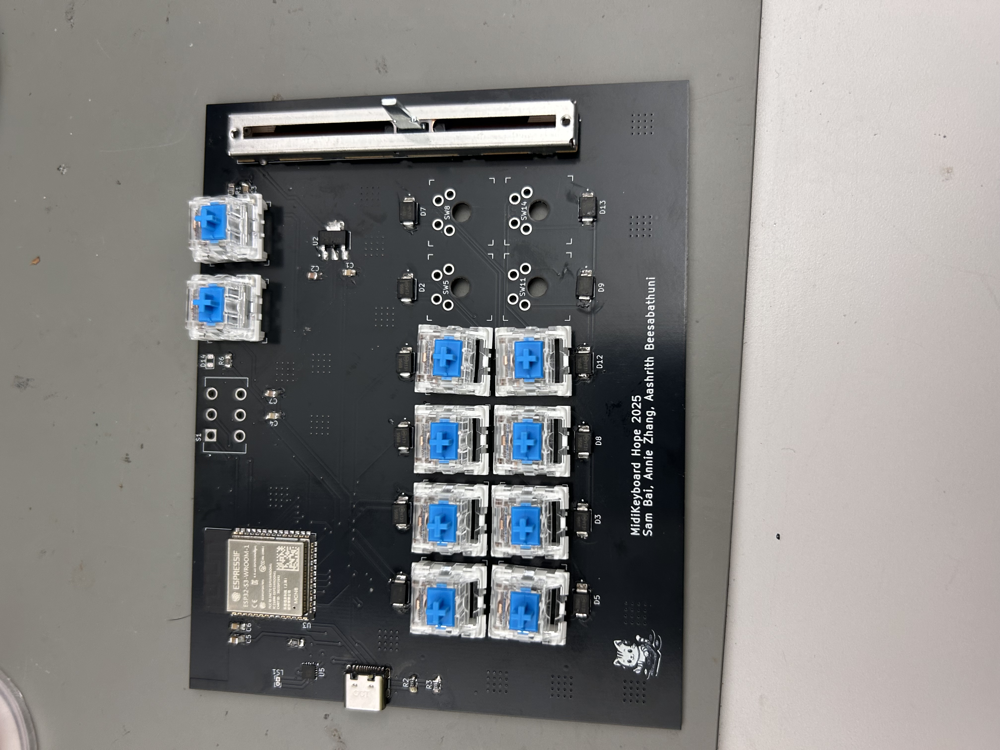
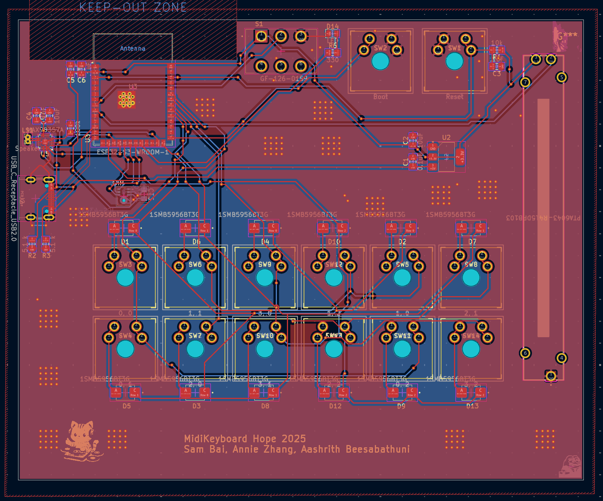
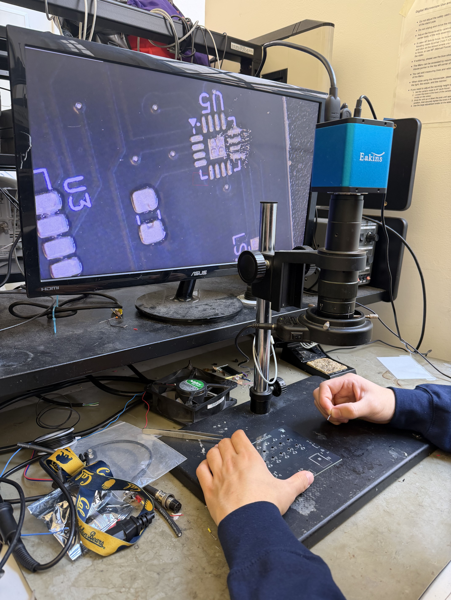

APE — A Portable Wireless Emulator
APE (Advanced PCB Engineering) Final Project
Project Overview
For my final project for APE, my team decided to build a functioning Claw Zero (based on the Flipper Zero [ADDDD LINK]). Similar in spirit to the Flipper Zero, the Claw Zero was aimed at making imporvmenets, including high preformaing analog, and wireless capabilities. The device will use USB-C Power Delivery to negotiate input power, allowing simultaneous operation and charging of a single-cell Li-ion or LiFePO₄ battery through an integrated battery protection and charging IC, with a fuel gauge providing accurate state-of-charge monitoring. A microcontroller (STM32 class) will manage user interaction through an LCD or OLED display, directional buttons, status LEDs, and optional haptic feedback, while also interfacing with external flash for firmware and data storage. The system will support multiple wireless and sensing modalities, including Bluetooth Low Energy at 2.4 GHz, sub-GHz radios for long-range communication, and RFID for proximity-based interaction. Additional I/O includes IR transmit/receive for device control, debug interfaces such as SWD/JTAG, and potentially expanded GPIO for external modules. Advanced design elements include mixed-signal PCB layout (RF + analog + digital domains), power-path management for simultaneous charging and load sharing, and multi-protocol RF coexistence. The requirements of the project included a high speed signal, advanced analog, and a power requirement. We included a high resolution screen, utilized wireless analog components, and had a BMS to satsify all requirements respecitvely.

My Role — NFC Subsystem
I and one other teammate were assigned to the NFC susbsytem. This was one of the more complex subcompoennts of our board, and included choosing the correct IC, completing both schematic and layout, along with preforming calculations to ensure our antenna was correct
The IC used for the NFC capability in this project was the ST25R, taking inspiration from the original chip on the Flipper Zero.
Schematics & Layout
[Placeholder — brief overview of the full board schematic and layout. Mention power domains, major ICs, and how subsystems are partitioned.]



Assembly & Build Process
One of the biggest challenges we faced on the board was integration with all other subsytems. We did not have many size contarints, but we will wanted a portable and compact device utlizing all the techniques we learned in class. Integration itself, such as ensuring all susbsytems had a place on the board, and limiting the ampunt of cross-talk and intefernce we got from all these devices. After the schematic was complete, we ordered the boards and started the build process. Due to the complexity of the soldering + some BGA compoenents, we ordered a stencil, and used a reflow oven to ensure our connections were solid. This step also involved alot of debugging, and continuitty tests.


Team
[Placeholder — brief description of the HOPE collective and team members / their roles.]

Status & Next Steps
[Placeholder — board has been designed and ordered. Next steps: bring-up, NFC subsystem validation, firmware bringup. What you'd do differently on rev 2.]